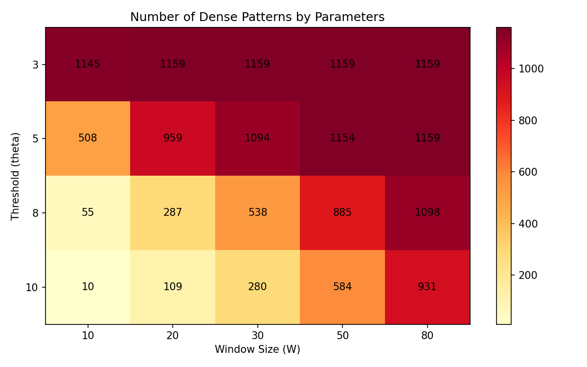

Bridging frequent itemset mining and pharmacovigilance for automated multi-pattern surveillance
We propose a framework that combines sliding-window frequent itemset mining with automated regulatory event attribution to detect dense prescription intervals: time periods where co-prescription patterns become unusually frequent. The method adapts the Apriori-window algorithm to ATC-coded prescription transactions, identifies change points in pattern density, and attributes changes to regulatory events using Welch's t-test with Benjamini-Hochberg FDR control. Experiments demonstrate detection of 3,100 dense patterns across 19 drug classes, identification of 856 disappearing and 601 emerging contrast patterns, and sub-second analysis on 1,000-transaction datasets.
Across 19 ATC level-3 drug classes in 1,000 transactions
856 disappearing + 601 emerging after BH correction
Disappearing patterns not directly targeted by regulatory event
Pattern detection on 1,000 transactions, W=30, theta=5
| Method | Temporal | Multi-drug | Auto-attribution | Dense intervals |
|---|---|---|---|---|
| PRR / ROR | × | × | × | × |
| BCPNN / GPS | × | × | × | × |
| Self-Controlled Case Series | ✓ | × | × | × |
| Interrupted Time Series | ✓ | × | Manual | × |
| Apriori / FP-Growth | × | ✓ | × | × |
| Sequential Pattern Mining | ✓ | ✓ | × | × |
| Ours | ✓ | ✓ | ✓ | ✓ |
| Pattern | Description | Pre-mean | Post-mean | Δ | Class |
|---|---|---|---|---|---|
| {N02A, N05B} | Opioid + Benzodiazepine | 6.14 | 2.72 | -3.42 | Disappearing |
| {N02A, N02B} | Opioid + Analgesic | 5.80 | 3.10 | -2.70 | Disappearing |
| {A10B, C10A} | Antidiabetic + Statin | 8.22 | 8.85 | +0.63 | Emerging |

| Drug Class | Patterns | Disappearing | Emerging | Stable |
|---|---|---|---|---|
| Cardiovascular | 1,087 | 145 | 3 | 939 |
| Pain Management | 1,096 | 182 | 36 | 878 |
| Antibiotics | 1,094 | 53 | 51 | 990 |
Pharmacoepidemiology, pharmacovigilance, clinical data mining
Synthetic MIMIC-IV-style prescription data with 19 ATC drug classes and 2 simulated FDA safety communications
Apriori-window sliding dense interval detection adapted for ATC-coded prescription transactions